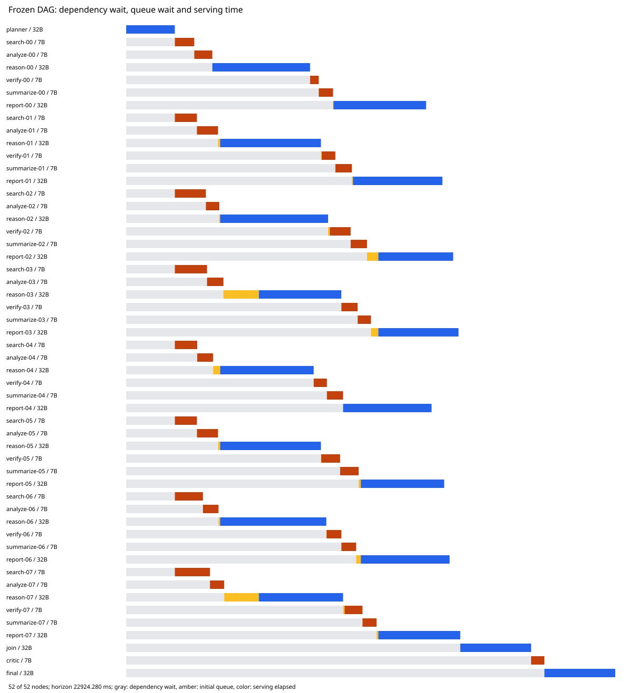
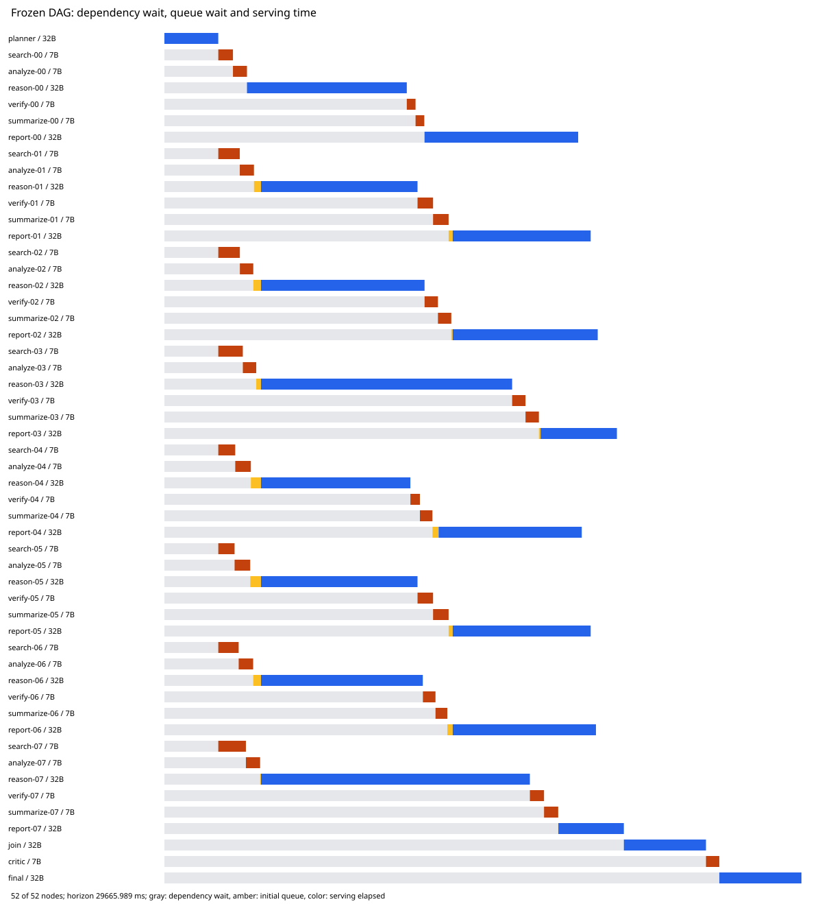

冻结 DAG 候选部署比较
同一冻结请求图上的因果调度预测。时间单位为 ms。
轨迹来源：synthetic_teaching_trace
52-node authored fork/join teaching workload. This is not a captured claudecode trace. 32B/7B names denote declared dense macro geometries. Four 48-GiB devices and 100 TFLOP/s, 800 GB/s are analytical assumptions, not measured W7900D specifications. INT4 effective width 0.515625 includes declared GPTQ-128-like scale metadata; fused dequant and all quantized behavior are assumptions.
Trace SHA256：1012da76e80906009d3b637e8d8dab7f2d1b3668887a6bffa1b6e757845a2559
候选摘要
仅全部节点完成、资源排空且没有错误的候选进入排名。截断结果可以保留任务 makespan，但不获得名次。
| 候选 | 合格名次 | 整体状态 | 任务 makespan | 观测 / 排空 elapsed | 资源已排空 |
|---|---|---|---|---|---|
| bf16-tp2-small-r2 | 1 | COMPLETED | 22,924.280 | 22,924.280 | True |
| fp8-single-small-r3 | 3 | COMPLETED | 29,665.989 | 29,665.989 | True |
| int4-single-small-r3 | 2 | COMPLETED | 24,380.265 | 24,380.265 | True |
任务 makespan 以最后输出 token 为准；elapsed 包含必要的反馈与 DMA 排空。二者分开报告，不能把 PP 反馈尾部计入用户任务墙钟。
bf16-tp2-small-r2
状态：COMPLETED · 任务 makespan：22,924.280 ms · elapsed：22,924.280 ms


fp8-single-small-r3
状态：COMPLETED · 任务 makespan：29,665.989 ms · elapsed：29,665.989 ms


int4-single-small-r3
状态：COMPLETED · 任务 makespan：24,380.265 ms · elapsed：24,380.265 ms

模型边界
- model pools own exclusive devices and independent links, host pools and DMA lanes
- dispatch, DAG dependency evaluation and inter-model data transfer have zero modeled latency
- request content and target model are frozen; generated semantic quality is not evaluated
- quantized byte widths are declared analytical assumptions, not quantization kernel validation
- per-device utilization is modeled busy time, not measured GPU occupancy